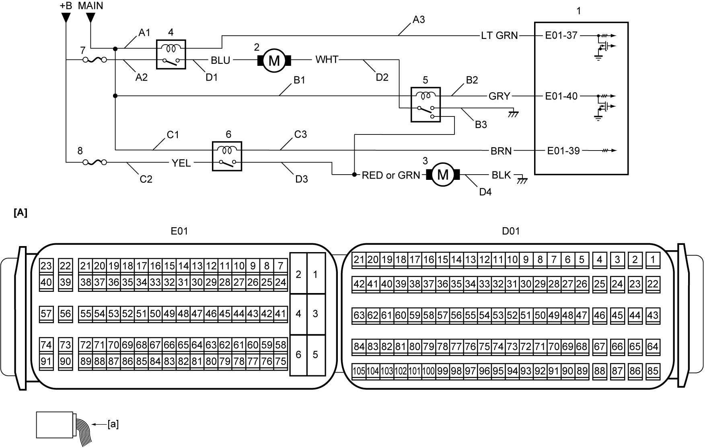

1A
| Radiator Cooling Fan Operation Check |
The radiator cooling fan can come on whenever the ignition is “ON”. This electric fan starts automatically anytime the ECT sensor senses a coolant temperature higher than a predetermined level even when the engine is not running.
When the ignition is “ON”, keep hands, tools, clothing, and other items away from the radiator cooling fan and drive belt.
Circuit Diagram

 "Expand image")
| [A]: | ECM connector (View: [a]) | D2: | Radiator cooling fan ground circuit |
| A1: | Radiator cooling fan relay No.1 power supply circuit (coil side) | D3: | Radiator cooling sub fan power supply circuit |
| A2: | Radiator cooling fan relay No.1 power supply circuit (switch side) | D4: | Radiator cooling sub fan ground circuit |
| A3: | Radiator cooling fan relay No.1 drive circuit | 1. | ECM |
| B1: | Radiator cooling fan relay No.2 power supply circuit (coil side) | 2. | Radiator cooling fan motor |
| B2: | Radiator cooling fan relay No.2 drive circuit | 3. | Radiator cooling sub fan motor |
| B3: | Radiator cooling fan relay No.2 ground circuit | 4. | Radiator cooling fan relay No.1 |
| C1: | Radiator cooling fan relay No.3 power supply circuit (coil side) | 5. | Radiator cooling fan relay No.2 |
| C2: | Radiator cooling fan relay No.3 power supply circuit (switch side) | 6. | Radiator cooling fan relay No.3 |
| C3: | Radiator cooling fan relay No.3 drive circuit | 7. | “RDTR” fuse |
| D1: | Radiator cooling fan power supply circuit | 8. | “RDTR2” fuse |
Troubleshooting
| Step | Action | Yes | No |
|---|---|---|---|
| 1 |
Output test
1)When ignition is “OFF”, connect SUZUKI scan tool to DLC.
2)Set ignition “ON”.
3)Select “Low” under “Radiator Fan” function in “Active Test” mode on SUZUKI scan tool.
4)Check that radiator cooling fan operates at low mode.
Is check result OK?
|
Go to Step 2.
|
Go to Step 4.
|
| 2 |
Output test
1)Select “Mid” under “Radiator Fan” function in “Active Test” mode on SUZUKI scan tool.
2)Check that radiator cooling fan operates at middle mode.
Is check result OK?
|
Go to Step 3.
|
Go to Step 9.
|
| 3 |
Output test
1)Select “High” under “Radiator Fan” function in “Active Test” mode on SUZUKI scan tool.
2)Check that radiator cooling fan operates at high mode.
Is check result OK?
|
End.
|
Go to Step 9.
|
| 4 |
Radiator cooling fan relay No.1 power supply circuit check
1)When ignition is “OFF”, remove radiator cooling fan relay No.1.
2)Check for proper terminal connection to radiator cooling fan relay No.1 connector.
3)If connections are OK, set ignition “ON”.
4)Check that voltage between each of “A1” and “A2” circuits and ground is battery voltage.
Is check result OK?
|
Go to Step 5.
|
Repair or replace defective wire harness.
|
| 5 |
Radiator cooling fan relay No.1 drive circuit check
1)When ignition is “OFF”, disconnect “E01” connector from ECM.
2)Check for proper terminal connection to “E01” connector.
3)If connections are OK, check the following points.
•Resistance of “A3” circuit: less than 1 Ω
•Resistance between “A3” circuit and ground: infinity •Resistance between “A3” circuit terminal and other terminal at radiator cooling fan relay No.1 connector: infinity •Voltage of “A3” circuit: approx. 0 V (When ignition is “ON”) Is check result OK?
|
Go to Step 6.
|
Repair or replace defective wire harness.
|
| 6 |
Radiator cooling fan relay No.1 check
1)Check radiator cooling fan relay No.1.
Is check result OK?
|
Go to Step 7.
|
Replace radiator cooling fan relay No.1.
|
| 7 |
Radiator cooling fan power supply circuit
1)When ignition is “OFF”, disconnect radiator cooling fan connector.
2)Check for proper terminal connection to radiator cooling fan connector.
3)If connections are OK, check the following points.
•Resistance of “D1” circuit: less than 1 Ω
•Resistance between “D1” circuit and ground: infinity •Resistance between “D1” circuit terminal and other terminal at radiator cooling fan connector: infinity •Voltage of “D1” circuit: approx. 0 V (When ignition is “ON”) Is check result OK?
|
Go to Step 8.
|
Repair or replace defective wire harness.
|
| 8 |
Radiator cooling fan ground circuit
1)Check the following points.
•Resistance of “D2” circuit: less than 1 Ω
•Resistance between “D2” circuit and ground: infinity •Resistance between “D2” circuit terminal and other terminal at radiator cooling fan connector: infinity •Voltage of “D2” circuit: approx. 0 V (When ignition is “ON”) Is check result OK?
|
Go to Step 15.
|
Repair or replace defective wire harness.
|
| 9 |
Radiator cooling fan relay No.2 and No.3 power supply circuit check
1)When ignition is “OFF”, remove radiator cooling fan relay No.2 and No.3.
2)Check for proper terminal connection to radiator cooling fan relay No.2 and No.3 connectors.
3)If connections are OK, set ignition “ON”.
4)Check that voltage between each of “B1”, “C1” and “C2” circuits and ground is battery voltage.
Is check result OK?
|
Go to Step 10.
|
Repair or replace defective wire harness.
|
| 10 |
Radiator cooling fan relay No.2 ground circuit check
1)Check that resistance “B3” circuit and ground is less than 1 Ω.
Is check result OK?
|
Go to Step 11.
|
Repair or replace defective wire harness.
|
| 11 |
Radiator cooling fan relay No.2 and No.3 drive circuit check
1)When ignition is “OFF”, disconnect “E01” connector from ECM.
2)Check for proper terminal connection to “E01” connector.
3)If connections are OK, check the following points.
•Resistance of “B2” and “C3” circuits: less than 1 Ω
•Resistance between each of “B2” and “C3” circuits and ground: infinity •Resistance between “B2” circuit terminal and other terminal at radiator cooling fan relay No.2 connector: infinity •Resistance between “C3” circuit terminal and other terminal at radiator cooling fan relay No.3 connector: infinity •Voltage of “B2” and “C3” circuits: approx. 0 V (When ignition is “ON”) Is check result OK?
|
Go to Step 12.
|
Repair or replace defective wire harness.
|
| 12 |
Radiator cooling sub fan power supply circuit
1)When ignition is “OFF”, disconnect radiator cooling sub fan connector.
2)Check for proper terminal connection to radiator cooling sub fan connector.
3)If connections are OK, check the following points.
•Resistance of “D3” circuit: less than 1 Ω
•Resistance between “D3” circuit and ground: infinity •Resistance between “D3” circuit terminal and other terminal at radiator cooling sub fan connector: infinity •Voltage of “D3” circuit: approx. 0 V (When ignition is “ON”) Is check result OK?
|
Go to Step 13.
|
Repair or replace defective wire harness.
|
| 13 |
Radiator cooling sub fan ground circuit
1)Check the following points.
•Resistance of “D4” circuit: less than 1 Ω
•Resistance between “D4” circuit and ground: infinity •Resistance between “D4” circuit terminal and other terminal at radiator cooling sub fan connector: infinity •Voltage of “D4” circuit: approx. 0 V (When ignition is “ON”) Is check result OK?
|
Go to Step 14.
|
Repair or replace defective wire harness.
|
| 14 |
Radiator cooling fan relay No.2 and No.3 check
1)Check radiator cooling fan relays No.2 and No.3.
Is check result OK?
|
Go to Step 15.
|
Replace radiator cooling fan relays No.2 and No.3.
|
| 15 |
Radiator cooling fan motor check
1)Check radiator cooling fan.
Is check result OK?
|
Replace ECM and recheck radiator cooling fan motor operation.
|
Replace radiator cooling fan motor and/or radiator cooling sub fan motor.
|